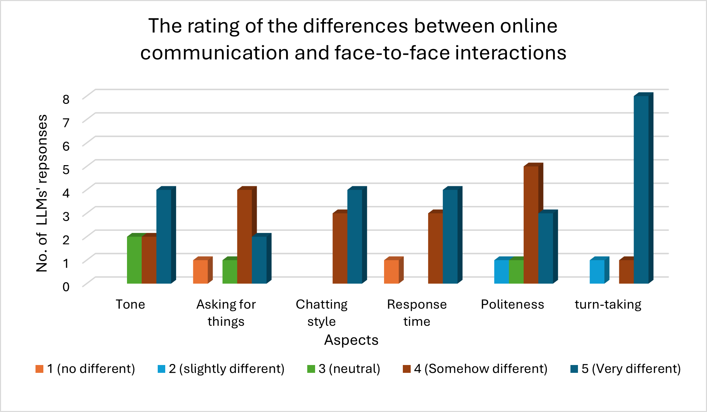

<!DOCTYPE html>
<html lang="en">
<head>
    <meta charset="UTF-8">
    <meta name="viewport" content="width=device-width, initial-scale=1.0">
    <title>LT3210 Final Project</title>
    <style>
        .bigtitle{
        background: lightsteelblue;
        text-align: center;
        margin-bottom: 30px;
        font-size: 30pt;
        padding: 30px;
        color: black;
        border-radius: 20px;
        box-shadow: 0 2px 3px rgba(0,0,0,0.1);
    }
        .result{
        background: rgb(254, 214, 246);
        margin-bottom: 10px;
        font-size: 20pt;
        padding: 3px;
        color: black;
        border-radius: 10px;
        box-shadow: 0 2px 3px rgba(0,0,0,0.1);
    }
        
        .result1{
            background: rgb(254, 214, 246);

        }
        
        .analysis{
        background: rgb(220, 247, 242);
        margin-bottom: 10px;
        font-size: 20pt;
        padding: 20px;
        color: black;
        border-radius: 20px;
        box-shadow: 0 2px 3px rgba(0,0,0,0.1);
    }

        .analysis1{
        background: rgb(220, 247, 242);
        font-size: 13pt;
        margin-bottom: 20px;
        padding: 30px;
        color: black;
        border-radius: 20px;
        box-shadow: 0 2px 3px rgba(0,0,0,0.1);
    }
        
    </style>
</head>
</html>
    <h1 class="bigtitle">LT3210 Final Project</h1>

    <body style="background-color: #F7F2ED;">

        <br>
        <br>
        <p><p1 class= "result" style="font-size: 27px;"><b>Result and Anlysis</b></p1><p2 class= "result1" ><br><br>&nbsp;&nbsp;To facilitate interpretation of the results and highlight broader patterns across related aspects, the questionnaire items were categorized into different categories.</p2></p>
        <p class= "analysis" style="font-size: 22px;">1. Interaction Style and Tone </p>
    <br><br><center></center></img>
    <br>
    <br>
    <p class= "analysis1">In “Interaction Style and Tone’, different models show significant differences in their rating of online and offline interactions, with majority counts at “4 (Somehow different)” and “5 (Very different)” across all six aspects. The vast majority of LLMs rated chat style, response time, and politeness at 4 or 5, indicating that the models generally considered online interactions not slightly different, but rather a significantly different communication style. Particularly, the significant increase in turn-taking differences at level 5, “very different”, suggesting that models tend to associate online chats with disrupted or disordered turn management. Meanwhile, the bar chart shows a more dispersed distribution of scores for lower categories, especially ‘tone’ and ‘asking for things’; some models rated ‘3 (neutral)’ or ‘2 (slightly different)’. For ‘asking for things’ and ‘response time’, there are also models that indicate ‘1 (no different)’.  
    <br><br>This demonstrates that most LLMs rate online and face-to-face communication as “somewhat different’ or ‘very different’ across all six areas. This pattern suggests that the models systematically treat online communication as a distinct interactional mode rather than a minor variation, with strong contrasts in “politeness” and “turn-taking”. According to Mo et al. (2024), online and offline interactions function differently, and these differences are crucial to social support and well-being, indicating interaction pattern influence how people handle interpersonal relationships and interaction cues. In another words, these logical models explicitly predict that online and f2f interactions will result in significant differences in how people speak, respond, and take turns, without requiring additional explanation. </p>


    <div class="popup-overlay" id="popupOverlay">
        <form action= "analysis2.html">
        <div class="popup" id="popup">
        <span class="close" id="closePopup">&times;</span>
        <p style="font-size: 19px;"> Do you understand? ? ? ? ? (Please answer yes/no)</p>
        <input type="yes/no" placeholder="Yes/No" style="font-size: 19px;">
        <button style="font-size: 19px;">Submit</button>
        </form>
    </div>


    <p style="font-size: 20px;"><a href="index.html">Main Page</a></p>
    </body>